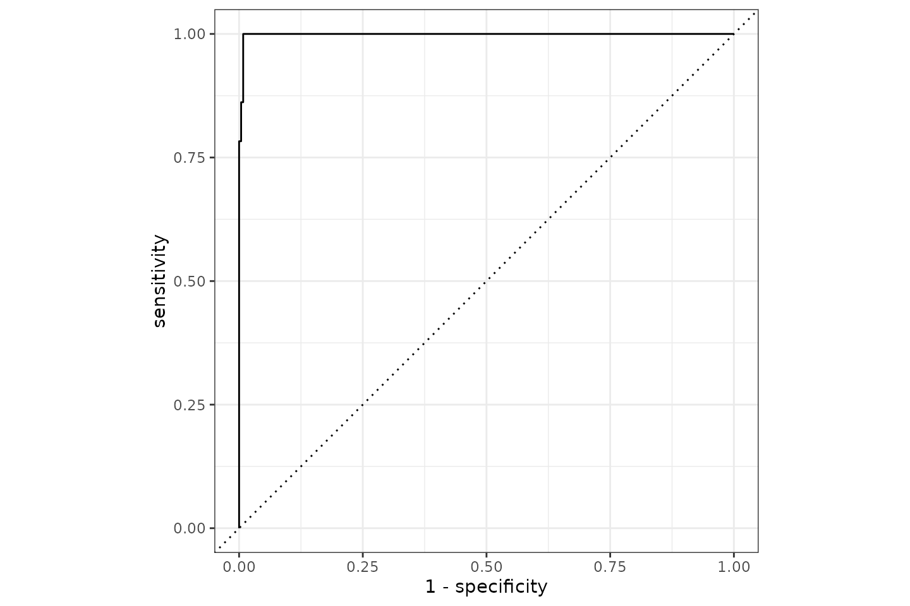
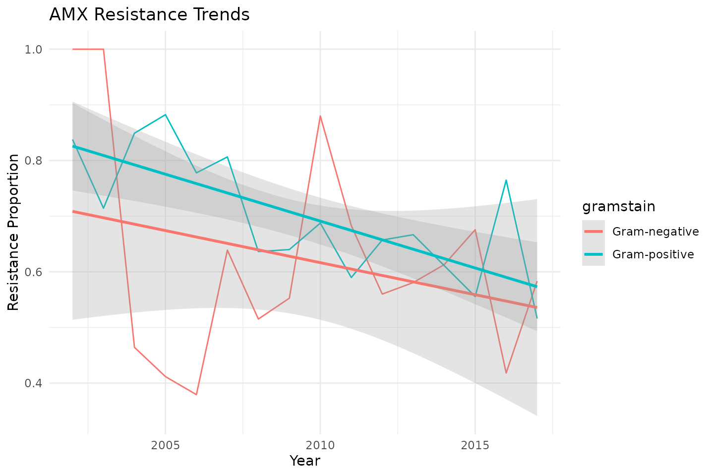

This page was entirely written by our AMR for R Assistant, a ChatGPT manually-trained model able to answer any question about the AMR package.
Antimicrobial resistance (AMR) is a global health crisis, and
understanding resistance patterns is crucial for managing effective
treatments. The AMR R package provides robust tools for
analysing AMR data, including convenient antimicrobial selector
functions like aminoglycosides() and
betalactams().
In this post, we will explore how to use the tidymodels
framework to predict resistance patterns in the
example_isolates dataset in two examples.
Example 1: Using Antimicrobial Selectors
By leveraging the power of tidymodels and the
AMR package, we’ll build a reproducible machine learning
workflow to predict the Gramstain of the microorganism to two important
antibiotic classes: aminoglycosides and beta-lactams.
Objective
Our goal is to build a predictive model using the
tidymodels framework to determine the Gramstain of the
microorganism based on microbial data. We will:
- Preprocess data using the selector functions
aminoglycosides()andbetalactams(). - Define a logistic regression model for prediction.
- Use a structured
tidymodelsworkflow to preprocess, train, and evaluate the model.
Data Preparation
We begin by loading the required libraries and preparing the
example_isolates dataset from the AMR
package.
# Load required libraries
library(AMR) # For AMR data analysis
library(tidymodels) # For machine learning workflows, and data manipulation (dplyr, tidyr, ...)
#> ── Attaching packages ────────────────────────────────────── tidymodels 1.3.0 ──
#> ✔ broom 1.0.8 ✔ recipes 1.2.1
#> ✔ dials 1.4.0 ✔ rsample 1.2.1
#> ✔ dplyr 1.1.4 ✔ tibble 3.2.1
#> ✔ ggplot2 3.5.1 ✔ tidyr 1.3.1
#> ✔ infer 1.0.7 ✔ tune 1.3.0
#> ✔ modeldata 1.4.0 ✔ workflows 1.2.0
#> ✔ parsnip 1.3.1 ✔ workflowsets 1.1.0
#> ✔ purrr 1.0.4 ✔ yardstick 1.3.2
#> ── Conflicts ───────────────────────────────────────── tidymodels_conflicts() ──
#> ✖ purrr::discard() masks scales::discard()
#> ✖ dplyr::filter() masks stats::filter()
#> ✖ dplyr::lag() masks stats::lag()
#> ✖ recipes::step() masks stats::step()
# Your data could look like this:
example_isolates
#> # A tibble: 2,000 × 46
#> date patient age gender ward mo PEN OXA FLC AMX
#> <date> <chr> <dbl> <chr> <chr> <mo> <sir> <sir> <sir> <sir>
#> 1 2002-01-02 A77334 65 F Clinical B_ESCHR_COLI R NA NA NA
#> 2 2002-01-03 A77334 65 F Clinical B_ESCHR_COLI R NA NA NA
#> 3 2002-01-07 067927 45 F ICU B_STPHY_EPDR R NA R NA
#> 4 2002-01-07 067927 45 F ICU B_STPHY_EPDR R NA R NA
#> 5 2002-01-13 067927 45 F ICU B_STPHY_EPDR R NA R NA
#> 6 2002-01-13 067927 45 F ICU B_STPHY_EPDR R NA R NA
#> 7 2002-01-14 462729 78 M Clinical B_STPHY_AURS R NA S R
#> 8 2002-01-14 462729 78 M Clinical B_STPHY_AURS R NA S R
#> 9 2002-01-16 067927 45 F ICU B_STPHY_EPDR R NA R NA
#> 10 2002-01-17 858515 79 F ICU B_STPHY_EPDR R NA S NA
#> # ℹ 1,990 more rows
#> # ℹ 36 more variables: AMC <sir>, AMP <sir>, TZP <sir>, CZO <sir>, FEP <sir>,
#> # CXM <sir>, FOX <sir>, CTX <sir>, CAZ <sir>, CRO <sir>, GEN <sir>,
#> # TOB <sir>, AMK <sir>, KAN <sir>, TMP <sir>, SXT <sir>, NIT <sir>,
#> # FOS <sir>, LNZ <sir>, CIP <sir>, MFX <sir>, VAN <sir>, TEC <sir>,
#> # TCY <sir>, TGC <sir>, DOX <sir>, ERY <sir>, CLI <sir>, AZM <sir>,
#> # IPM <sir>, MEM <sir>, MTR <sir>, CHL <sir>, COL <sir>, MUP <sir>, …
# Select relevant columns for prediction
data <- example_isolates %>%
# select AB results dynamically
select(mo, aminoglycosides(), betalactams()) %>%
# replace NAs with NI (not-interpretable)
mutate(across(where(is.sir),
~replace_na(.x, "NI")),
# make factors of SIR columns
across(where(is.sir),
as.integer),
# get Gramstain of microorganisms
mo = as.factor(mo_gramstain(mo))) %>%
# drop NAs - the ones without a Gramstain (fungi, etc.)
drop_na()
#> ℹ For aminoglycosides() using columns 'GEN' (gentamicin), 'TOB'
#> (tobramycin), 'AMK' (amikacin), and 'KAN' (kanamycin)
#> ℹ For betalactams() using columns 'PEN' (benzylpenicillin), 'OXA'
#> (oxacillin), 'FLC' (flucloxacillin), 'AMX' (amoxicillin), 'AMC'
#> (amoxicillin/clavulanic acid), 'AMP' (ampicillin), 'TZP'
#> (piperacillin/tazobactam), 'CZO' (cefazolin), 'FEP' (cefepime), 'CXM'
#> (cefuroxime), 'FOX' (cefoxitin), 'CTX' (cefotaxime), 'CAZ' (ceftazidime),
#> 'CRO' (ceftriaxone), 'IPM' (imipenem), and 'MEM' (meropenem)Explanation:
-
aminoglycosides()andbetalactams()dynamically select columns for antimicrobials in these classes. -
drop_na()ensures the model receives complete cases for training.
Defining the Workflow
We now define the tidymodels workflow, which consists of
three steps: preprocessing, model specification, and fitting.
1. Preprocessing with a Recipe
We create a recipe to preprocess the data for modelling.
# Define the recipe for data preprocessing
resistance_recipe <- recipe(mo ~ ., data = data) %>%
step_corr(c(aminoglycosides(), betalactams()), threshold = 0.9)
resistance_recipe
#>
#> ── Recipe ──────────────────────────────────────────────────────────────────────
#>
#> ── Inputs
#> Number of variables by role
#> outcome: 1
#> predictor: 20
#>
#> ── Operations
#> • Correlation filter on: c(aminoglycosides(), betalactams())For a recipe that includes at least one preprocessing operation, like
we have with step_corr(), the necessary parameters can be
estimated from a training set using prep():
prep(resistance_recipe)
#> ℹ For aminoglycosides() using columns 'GEN' (gentamicin), 'TOB'
#> (tobramycin), 'AMK' (amikacin), and 'KAN' (kanamycin)
#> ℹ For betalactams() using columns 'PEN' (benzylpenicillin), 'OXA'
#> (oxacillin), 'FLC' (flucloxacillin), 'AMX' (amoxicillin), 'AMC'
#> (amoxicillin/clavulanic acid), 'AMP' (ampicillin), 'TZP'
#> (piperacillin/tazobactam), 'CZO' (cefazolin), 'FEP' (cefepime), 'CXM'
#> (cefuroxime), 'FOX' (cefoxitin), 'CTX' (cefotaxime), 'CAZ' (ceftazidime),
#> 'CRO' (ceftriaxone), 'IPM' (imipenem), and 'MEM' (meropenem)
#>
#> ── Recipe ──────────────────────────────────────────────────────────────────────
#>
#> ── Inputs
#> Number of variables by role
#> outcome: 1
#> predictor: 20
#>
#> ── Training information
#> Training data contained 1968 data points and no incomplete rows.
#>
#> ── Operations
#> • Correlation filter on: AMX CTX | TrainedExplanation:
-
recipe(mo ~ ., data = data)will take themocolumn as outcome and all other columns as predictors. -
step_corr()removes predictors (i.e., antibiotic columns) that have a higher correlation than 90%.
Notice how the recipe contains just the antimicrobial selector
functions - no need to define the columns specifically. In the
preparation (retrieved with prep()) we can see that the
columns or variables ‘AMX’ and ‘CTX’ were removed as they correlate too
much with existing, other variables.
2. Specifying the Model
We define a logistic regression model since resistance prediction is a binary classification task.
# Specify a logistic regression model
logistic_model <- logistic_reg() %>%
set_engine("glm") # Use the Generalised Linear Model engine
logistic_model
#> Logistic Regression Model Specification (classification)
#>
#> Computational engine: glmExplanation:
-
logistic_reg()sets up a logistic regression model. -
set_engine("glm")specifies the use of R’s built-in GLM engine.
3. Building the Workflow
We bundle the recipe and model together into a workflow,
which organises the entire modeling process.
# Combine the recipe and model into a workflow
resistance_workflow <- workflow() %>%
add_recipe(resistance_recipe) %>% # Add the preprocessing recipe
add_model(logistic_model) # Add the logistic regression model
resistance_workflow
#> ══ Workflow ════════════════════════════════════════════════════════════════════
#> Preprocessor: Recipe
#> Model: logistic_reg()
#>
#> ── Preprocessor ────────────────────────────────────────────────────────────────
#> 1 Recipe Step
#>
#> • step_corr()
#>
#> ── Model ───────────────────────────────────────────────────────────────────────
#> Logistic Regression Model Specification (classification)
#>
#> Computational engine: glmTraining and Evaluating the Model
To train the model, we split the data into training and testing sets. Then, we fit the workflow on the training set and evaluate its performance.
# Split data into training and testing sets
set.seed(123) # For reproducibility
data_split <- initial_split(data, prop = 0.8) # 80% training, 20% testing
training_data <- training(data_split) # Training set
testing_data <- testing(data_split) # Testing set
# Fit the workflow to the training data
fitted_workflow <- resistance_workflow %>%
fit(training_data) # Train the modelExplanation:
-
initial_split()splits the data into training and testing sets. -
fit()trains the workflow on the training set.
Notice how in fit(), the antimicrobial selector
functions are internally called again. For training, these functions are
called since they are stored in the recipe.
Next, we evaluate the model on the testing data.
# Make predictions on the testing set
predictions <- fitted_workflow %>%
predict(testing_data) # Generate predictions
probabilities <- fitted_workflow %>%
predict(testing_data, type = "prob") # Generate probabilities
predictions <- predictions %>%
bind_cols(probabilities) %>%
bind_cols(testing_data) # Combine with true labels
predictions
#> # A tibble: 394 × 24
#> .pred_class `.pred_Gram-negative` `.pred_Gram-positive` mo GEN TOB
#> <fct> <dbl> <dbl> <fct> <int> <int>
#> 1 Gram-positive 1.07e- 1 8.93e- 1 Gram-p… 5 5
#> 2 Gram-positive 3.17e- 8 1.00e+ 0 Gram-p… 5 1
#> 3 Gram-negative 9.99e- 1 1.42e- 3 Gram-n… 5 5
#> 4 Gram-positive 2.22e-16 1 e+ 0 Gram-p… 5 5
#> 5 Gram-negative 9.46e- 1 5.42e- 2 Gram-n… 5 5
#> 6 Gram-positive 1.07e- 1 8.93e- 1 Gram-p… 5 5
#> 7 Gram-positive 2.22e-16 1 e+ 0 Gram-p… 1 5
#> 8 Gram-positive 2.22e-16 1 e+ 0 Gram-p… 4 4
#> 9 Gram-negative 1 e+ 0 2.22e-16 Gram-n… 1 1
#> 10 Gram-positive 6.05e-11 1.00e+ 0 Gram-p… 4 4
#> # ℹ 384 more rows
#> # ℹ 18 more variables: AMK <int>, KAN <int>, PEN <int>, OXA <int>, FLC <int>,
#> # AMX <int>, AMC <int>, AMP <int>, TZP <int>, CZO <int>, FEP <int>,
#> # CXM <int>, FOX <int>, CTX <int>, CAZ <int>, CRO <int>, IPM <int>, MEM <int>
# Evaluate model performance
metrics <- predictions %>%
metrics(truth = mo, estimate = .pred_class) # Calculate performance metrics
metrics
#> # A tibble: 2 × 3
#> .metric .estimator .estimate
#> <chr> <chr> <dbl>
#> 1 accuracy binary 0.995
#> 2 kap binary 0.989
# To assess some other model properties, you can make our own `metrics()` function
our_metrics <- metric_set(accuracy, kap, ppv, npv) # add Positive Predictive Value and Negative Predictive Value
metrics2 <- predictions %>%
our_metrics(truth = mo, estimate = .pred_class) # run again on our `our_metrics()` function
metrics2
#> # A tibble: 4 × 3
#> .metric .estimator .estimate
#> <chr> <chr> <dbl>
#> 1 accuracy binary 0.995
#> 2 kap binary 0.989
#> 3 ppv binary 0.987
#> 4 npv binary 1Explanation:
-
predict()generates predictions on the testing set. -
metrics()computes evaluation metrics like accuracy and kappa.
It appears we can predict the Gram stain with a 99.5% accuracy based on AMR results of only aminoglycosides and beta-lactam antibiotics. The ROC curve looks like this:

Conclusion
In this post, we demonstrated how to build a machine learning
pipeline with the tidymodels framework and the
AMR package. By combining selector functions like
aminoglycosides() and betalactams() with
tidymodels, we efficiently prepared data, trained a model,
and evaluated its performance.
This workflow is extensible to other antimicrobial classes and resistance patterns, empowering users to analyse AMR data systematically and reproducibly.
Example 2: Predicting AMR Over Time
In this second example, we aim to predict antimicrobial resistance
(AMR) trends over time using tidymodels. We will model
resistance to three antibiotics (amoxicillin AMX,
amoxicillin-clavulanic acid AMC, and ciprofloxacin
CIP), based on historical data grouped by year and hospital
ward.
Objective
Our goal is to:
- Prepare the dataset by aggregating resistance data over time.
- Define a regression model to predict AMR trends.
- Use
tidymodelsto preprocess, train, and evaluate the model.
Data Preparation
We start by transforming the example_isolates dataset
into a structured time-series format.
# Load required libraries
library(AMR)
library(tidymodels)
# Transform dataset
data_time <- example_isolates %>%
top_n_microorganisms(n = 10) %>% # Filter on the top #10 species
mutate(year = as.integer(format(date, "%Y")), # Extract year from date
gramstain = mo_gramstain(mo)) %>% # Get taxonomic names
group_by(year, gramstain) %>%
summarise(across(c(AMX, AMC, CIP),
function(x) resistance(x, minimum = 0),
.names = "res_{.col}"),
.groups = "drop") %>%
filter(!is.na(res_AMX) & !is.na(res_AMC) & !is.na(res_CIP)) # Drop missing values
#> ℹ Using column 'mo' as input for col_mo.
data_time
#> # A tibble: 32 × 5
#> year gramstain res_AMX res_AMC res_CIP
#> <int> <chr> <dbl> <dbl> <dbl>
#> 1 2002 Gram-negative 1 0.105 0.0606
#> 2 2002 Gram-positive 0.838 0.182 0.162
#> 3 2003 Gram-negative 1 0.0714 0
#> 4 2003 Gram-positive 0.714 0.244 0.154
#> 5 2004 Gram-negative 0.464 0.0938 0
#> 6 2004 Gram-positive 0.849 0.299 0.244
#> 7 2005 Gram-negative 0.412 0.132 0.0588
#> 8 2005 Gram-positive 0.882 0.382 0.154
#> 9 2006 Gram-negative 0.379 0 0.1
#> 10 2006 Gram-positive 0.778 0.333 0.353
#> # ℹ 22 more rowsExplanation: - mo_name(mo): Converts
microbial codes into proper species names. - resistance():
Converts AMR results into numeric values (proportion of resistant
isolates). - group_by(year, ward, species): Aggregates
resistance rates by year and ward.
Defining the Workflow
We now define the modeling workflow, which consists of a preprocessing step, a model specification, and the fitting process.
1. Preprocessing with a Recipe
# Define the recipe
resistance_recipe_time <- recipe(res_AMX ~ year + gramstain, data = data_time) %>%
step_dummy(gramstain, one_hot = TRUE) %>% # Convert categorical to numerical
step_normalize(year) %>% # Normalise year for better model performance
step_nzv(all_predictors()) # Remove near-zero variance predictors
resistance_recipe_time
#>
#> ── Recipe ──────────────────────────────────────────────────────────────────────
#>
#> ── Inputs
#> Number of variables by role
#> outcome: 1
#> predictor: 2
#>
#> ── Operations
#> • Dummy variables from: gramstain
#> • Centering and scaling for: year
#> • Sparse, unbalanced variable filter on: all_predictors()Explanation: - step_dummy(): Encodes
categorical variables (ward, species) as
numerical indicators. - step_normalize(): Normalises the
year variable. - step_nzv(): Removes near-zero
variance predictors.
2. Specifying the Model
We use a linear regression model to predict resistance trends.
# Define the linear regression model
lm_model <- linear_reg() %>%
set_engine("lm") # Use linear regression
lm_model
#> Linear Regression Model Specification (regression)
#>
#> Computational engine: lmExplanation: - linear_reg(): Defines a
linear regression model. - set_engine("lm"): Uses R’s
built-in linear regression engine.
3. Building the Workflow
We combine the preprocessing recipe and model into a workflow.
# Create workflow
resistance_workflow_time <- workflow() %>%
add_recipe(resistance_recipe_time) %>%
add_model(lm_model)
resistance_workflow_time
#> ══ Workflow ════════════════════════════════════════════════════════════════════
#> Preprocessor: Recipe
#> Model: linear_reg()
#>
#> ── Preprocessor ────────────────────────────────────────────────────────────────
#> 3 Recipe Steps
#>
#> • step_dummy()
#> • step_normalize()
#> • step_nzv()
#>
#> ── Model ───────────────────────────────────────────────────────────────────────
#> Linear Regression Model Specification (regression)
#>
#> Computational engine: lmTraining and Evaluating the Model
We split the data into training and testing sets, fit the model, and evaluate performance.
# Split the data
set.seed(123)
data_split_time <- initial_split(data_time, prop = 0.8)
train_time <- training(data_split_time)
test_time <- testing(data_split_time)
# Train the model
fitted_workflow_time <- resistance_workflow_time %>%
fit(train_time)
# Make predictions
predictions_time <- fitted_workflow_time %>%
predict(test_time) %>%
bind_cols(test_time)
# Evaluate model
metrics_time <- predictions_time %>%
metrics(truth = res_AMX, estimate = .pred)
metrics_time
#> # A tibble: 3 × 3
#> .metric .estimator .estimate
#> <chr> <chr> <dbl>
#> 1 rmse standard 0.0774
#> 2 rsq standard 0.711
#> 3 mae standard 0.0704Explanation: - initial_split(): Splits
data into training and testing sets. - fit(): Trains the
workflow. - predict(): Generates resistance predictions. -
metrics(): Evaluates model performance.
Visualising Predictions
We plot resistance trends over time for amoxicillin.
library(ggplot2)
# Plot actual vs predicted resistance over time
ggplot(predictions_time, aes(x = year)) +
geom_point(aes(y = res_AMX, color = "Actual")) +
geom_line(aes(y = .pred, color = "Predicted")) +
labs(title = "Predicted vs Actual AMX Resistance Over Time",
x = "Year",
y = "Resistance Proportion") +
theme_minimal()
Additionally, we can visualise resistance trends in
ggplot2 and directly add linear models there:
ggplot(data_time, aes(x = year, y = res_AMX, color = gramstain)) +
geom_line() +
labs(title = "AMX Resistance Trends",
x = "Year",
y = "Resistance Proportion") +
# add a linear model directly in ggplot2:
geom_smooth(method = "lm",
formula = y ~ x,
alpha = 0.25) +
theme_minimal()
Conclusion
In this example, we demonstrated how to analyze AMR trends over time
using tidymodels. By aggregating resistance rates by year
and hospital ward, we built a predictive model to track changes in
resistance to amoxicillin (AMX), amoxicillin-clavulanic
acid (AMC), and ciprofloxacin (CIP).
This method can be extended to other antibiotics and resistance patterns, providing valuable insights into AMR dynamics in healthcare settings.